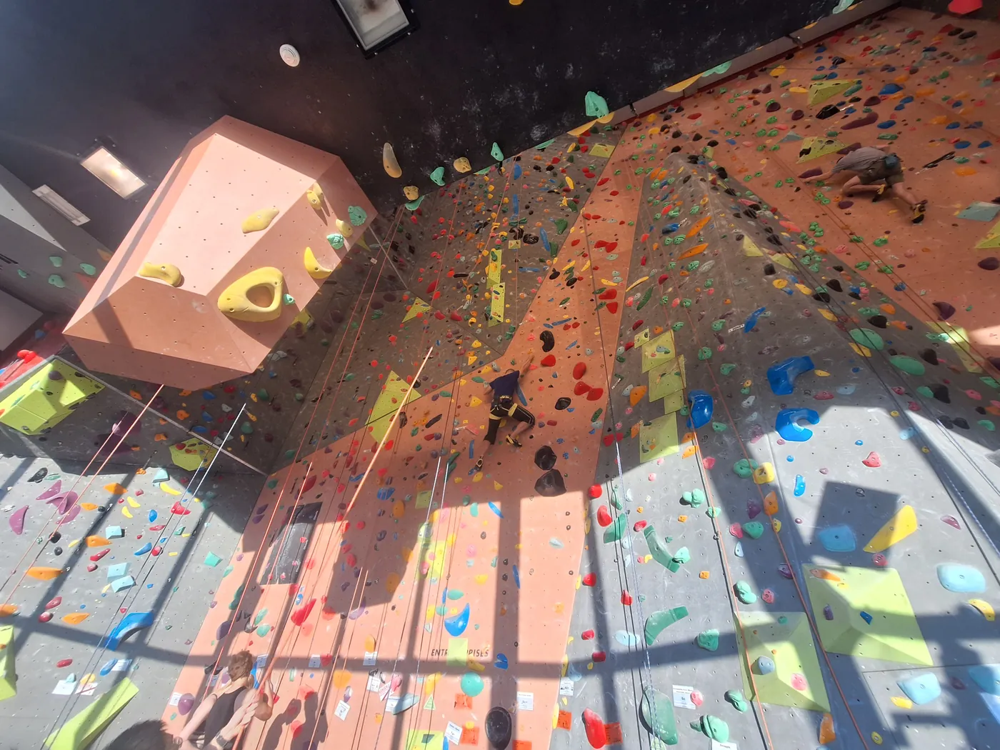
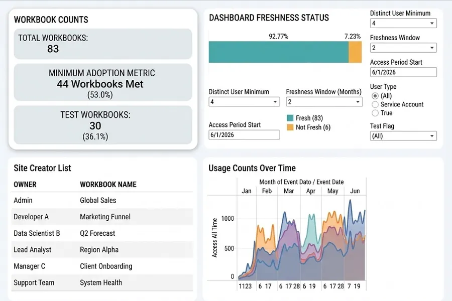
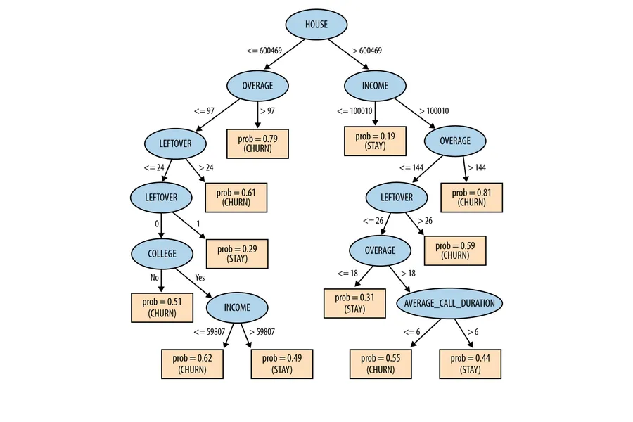
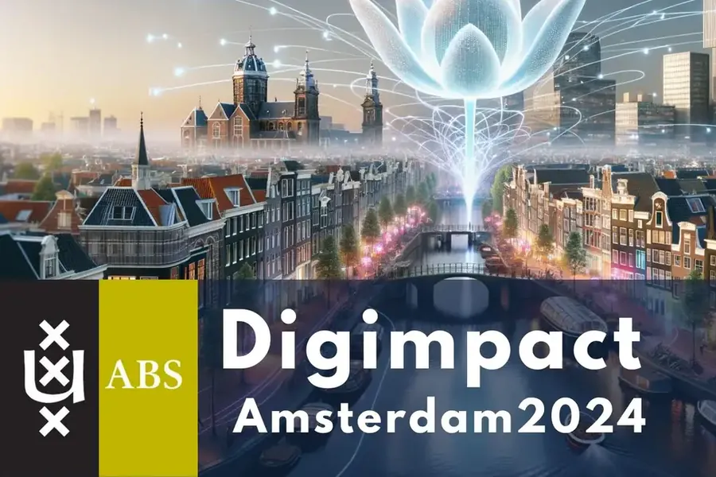
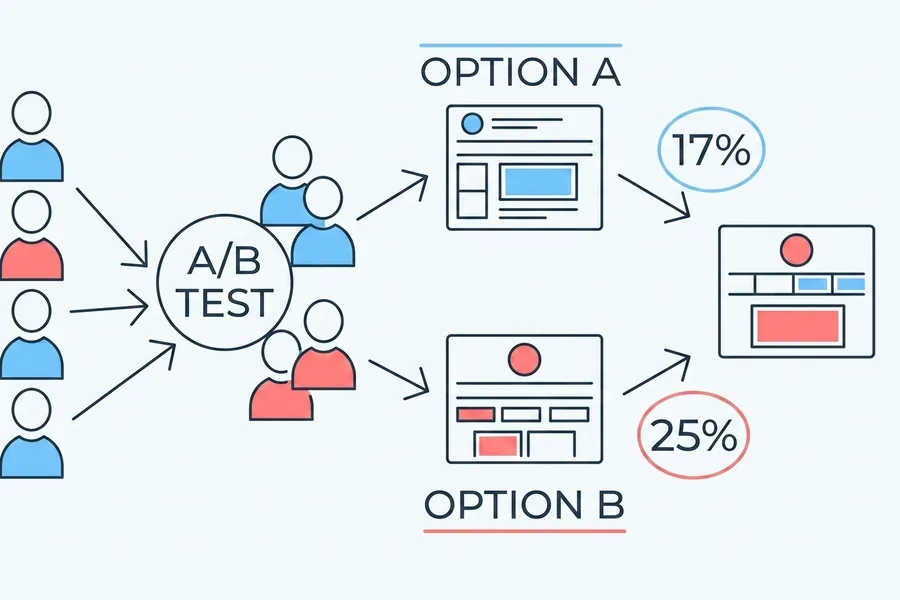
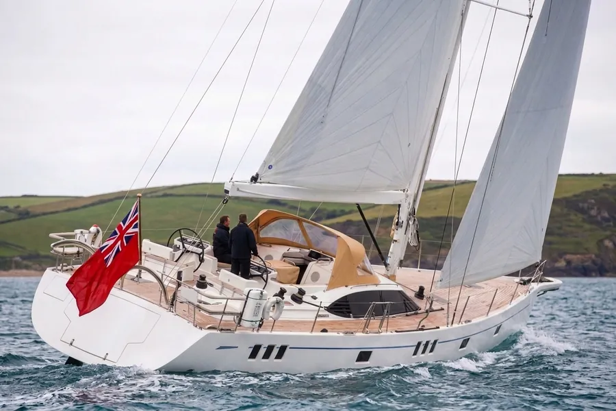
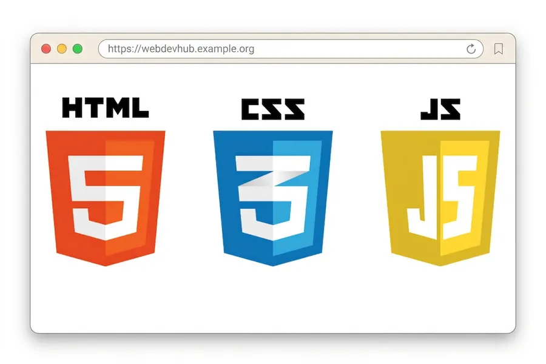

Bouldering at 6c, working towards 7a by the end of the year.

My local climbing hall.
About
Recent Master's graduate in Digital Business & Data, working at the intersection of data science and commercial decision making. I'm drawn to the technical side of the work: building things, especially automations and apps that make life easier. This is what pulls me toward analyst and analyst adjacent roles. Most recently, I wrapped up a Supply Chain Analytics internship at Nike EMEA, turning data into actionable insights, building automated reporting, and partnering closely with stakeholders. Comfortable across Python, Tableau, Excel, SQL, and a variety of AI tools for building agents and coding.
Outside of work, I climb, currently bouldering 6c and aiming for 7a by the end of the year. I also play guitar, something I picked up at 10, and played in a few alt rock bands along the way, though these days my listening ranges wider, from funk and jazz to electronic. I also enjoy photography, more specifically candid shots of friends whenever we hang out. I'm also a nerd for computers, AI, and video games, and still make time for tennis, padel, and hiking when I can.
Experience
Supply Chain Analytics Intern — Nike, EMEA
Hilversum Netherlands · Full-time · Feb–Aug 2026
Partnered with supply chain stakeholders to turn live data into actionable insights across EMEA
Queried and analysed orderbook data with SQL to identify risks and opportunities
Built automated Tableau reporting/dashboards for KPIs, inventory position, and asset performance
Developed and piloted AI-enabled analytical tools for faster self-serve insights
Bridged technical data teams and business stakeholders
Data & CRM Assistant — L'Oréal Benelux
Hoofddorp Netherlands · Full-time · Mar–Sep 2024
Analysed B2B customer/behavioral data across 20,000+ clients for revenue-oriented recommendations
Built segmentation logic and personalised CRM campaigns with A/B testing
Used Power BI and Looker Studio dashboards to track performance
Automated Excel workflows with VBA macros — cut a manual task from 50 clicks to 5 (saving 2 hrs/week)
Used SQL for segmentation and GDPR compliance checks
Delivered engaging tours and presentations in high-pressure, client-facing settings
MSc Business Administration, Digital Business & Data — University of Amsterdam
2024–2025 · GPA 7.9
BSc Business Administration — University of Amsterdam
2020–2023 · GPA 7.1
Skills
Data & Analytics
SQL
Python (pandas)
Advanced Excel (Macros, VBA)
Predictive modelling (ML)
A/B testing & experiment design
Customer segmentation
Visualisation & Reporting
Tableau
Power BI
Looker Studio
Dashboard design
KPI & performance reporting
AI & Automation
LLM applications for business
Building AI agents
Claude, ChatGPT, Copilot
Cursor
Workflow automation (Python, VBA)
Web Development
HTML & CSS
JavaScript
Git & version control
Working & Communication
Stakeholder management
Requirements gathering
Public speaking & presenting
Translating technical concepts for non-technical audiences
Agile / SCRUM
GDPR compliance
Languages
English (native)
French (fluent)
Spanish (fluent)
Projects

Dashboard of Dashboards Nike EMEA
A Tableau dashboard built on Tableau's own metadata, giving a central analytics team oversight of its entire dashboard portfolio — what exists, who owns it, and what's actually being used.

Customer Churn Prediction UvA
Tree-based ML classification model in Python, predicting customer churn from behavioral data.

DigImpact Hackathon — Nestlé Winner, Nov 2024
Used predictive analytics to model peak coffee consumption periods as part of the winning team.

Master's Thesis: Data-Driven Personalisation UvA
Field experiment on optimising marketing campaigns through personalisation, using statistical models and real L'Oréal data.

Oyster Yachts — Motivational Analysis
Survey-based study analysing motivational drivers for a luxury yacht brand.

This Website
Designed and built from scratch in HTML, CSS and JavaScript. no template, no page builder. Made with AI, every design and technical decision reasoned through and documented rather than accepted off the shelf.
Contact
I'm currently looking for my next role. If you think I'd be a good fit for your
team, or you just want to talk data, dashboards or climbing, connect and message me on
LinkedIn, it's the quickest way to reach me.